품질경영기사 (2015-03-08 기출문제)
1과목: 실험계획법
1. 직교 배열표 L9(34)로 인자를 랜덤하게 배치한 결과 다음의 표를 얻었다. A의 제곱합(SA)은?(오류 신고가 접수된 문제입니다. 반드시 정답과 해설을 확인하시기 바랍니다.)
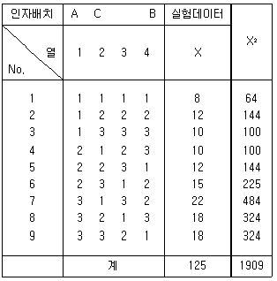
- 60.84
- 98.01
- 141.56
- 249.64
(정답률: 64%)

2. 실험계획법에 대한 설명 중 틀린 것은?
- 3×3 라틴방격에서 오차항의 자유도는 2 이다.
- 4×4 그레코라틴 방격에서 오차항의 자유도는 3 이다.
- 그레코라틴 방격이란 서로 직교하는 라틴방격 2개를 조합한 방격이다.
- 실험을 반복하면 일반적으로 오차항의 자유도는 커져서 검출력이 감소한다.
(정답률: 70%)
3. 모수인자 A를 5수준 택하고 블록인자로 실험일(B)을 랜덤으로 4일 택하여 난괴법으로 실험했다.
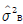
의 공식으로 맞는 것은?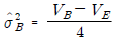
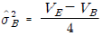
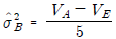
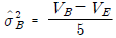
(정답률: 67%)
4. 3대의 기계를 사용하여 각각 200개씩의 제품을 만든다고 했을 때 제품의 적합 여부를 실험한 결과가 다음 표와 같다. 적합품이면 0, 부적합품이면 1의 값을 주기로 하고, 위의 실험을 1원배치 실험과 똑같이 바꾸어 보면 인자 A는 수준수가 3인 기계이고, 각 수준에서의 반복은 200이 된다. 이와 같은 1원배치 실험을 실시했을 때의 기계간의 변동(SA)은 얼마인가?
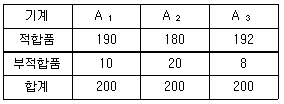
- 0.06
- 0.41
- 2.41
- 2.82
(정답률: 68%)
5. 반복이 있는 2원배치법에서 교호작용 A×B 가 유의하지 못하여 오차항에 풀링되었다. 이때 새로운 오차항을 E라고 할 때, μ(AiBj)의 100(1-α)% 신뢰구간 공식은? (단, 각 수준조합에서의 반복수는 r 이고, ne 는 유효반복수이다.)
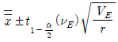
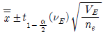
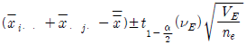
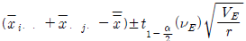
(정답률: 62%)
6. ℓ=4, m=5인 1원배치 실험에서 분산분석 결과 인자A가 1%로 유의적이었다. ST = 2.478, SA = 1.690 이고,
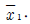
= 7.72 일 때, μ(A1)를 α=0.01 로 구간추정하면? (단, t0.99(16)=2.583, t0.995(16)=2.921 이다.)- 7.430 ≤ μ(A1) ≤ 8.010
- 7.396 ≤ μ(A1) ≤ 8.044
- 7.433 ≤ μ(A1) ≤ 8.007
- 7.464 ≤ μ(A1) ≤ 7.976
(정답률: 59%)
7. 두 개 이상의 요인효과를 합쳐서 동일한 환경내에서 적은 실험설계 시 사용되는 것은?
- 대비
- 교락
- 라틴방격
- 교호작용
(정답률: 57%)
8. 여러 가지 샘플링 및 측정의 정도를 추정하여 샘플링 방식의 설계를 하거나 측정방법을 검토하기 위한 실험계획법으로 가장 적합한 것은?
- 난괴법
- 라틴방격법
- 직교다항식
- 지분실험법
(정답률: 60%)
9. yiㆍ은 i번째 처리 수준에서 측정값의 합을 나타낸다. 다음 중 대비(contrast)가 아닌 것은?
- c=y1ㆍy3ㆍ-y4ㆍy5ㆍ
- c=3y1ㆍ+y2ㆍ-2y3ㆍ-2y4ㆍ
- c=4y1ㆍ-3y3ㆍ+y4ㆍ-y5ㆍ
- c=-y1ㆍ+4y2ㆍ-y3ㆍ-y4ㆍ-y5ㆍ
(정답률: 74%)
10. 23요인 배치실험을 교락법을 사용하여 다음과 같이 2개의 블록으로 나누어 실험하려고 한다. 블록과 교락되어 있는 교호작용은?
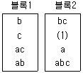
- A×B
- A×C
- B×C
- A×B×C
(정답률: 70%)
11. 반복 없는 3원배치(3인자 모두 모수)에서 ℓ=3, m=3, n=2 일 때, νA×C 값은?
- 2
- 4
- 5
- 6
(정답률: 49%)
12. 다음은 인자 A가 4수준인 1원배치 실험의 분산분석표이다. 이 표에 의한 다음 값 중 틀린 것은?
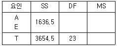
- SE = 2018
- νA= 3
- VA = 545.5
- F0 = 4.5
(정답률: 75%)
13. A, B, C는 수준이 각각 3인 모수인자이며 A, B를 1차 인자로, C를 2차인자로 하여 1차단위가 2원배치인 단일 분할법 실험을 실시하였다. 이때 자유도의 계산이 틀린 것은?
- νA=2
- νE1=4
- νA×C=4
- νE2=12
(정답률: 71%)
14. 목표출력 전압이 110V인 스테레오 시스템에 사용되는 전력공급의 기기가 출력전압이 110±20V 일 때, 출력허용 한계를 벗어나면 고장나서 수선해야 한다. 스테레오 수리비가 50,000원 이라고 가정할 때, 출력 전압이 120V라면 평균손실 비용은?
- 1250원
- 12500원
- 25000원
- 30000원
(정답률: 45%)
15. 23 형 계획에서 교호작용 ABC를 블록과 교락시킨 후 abc가 포함된 블록으로
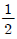
블록일부실시법을 행하였을 때, 교호작용 BC와 별명(alias) 관계에 있는 주인자의 주효과를 바르게 표현한 것은? [(b+abc)-(a+c)]
[(b+abc)-(a+c)] [(a+abc)-(b+c)]
[(a+abc)-(b+c)] [(c+abc)-(a+b)]
[(c+abc)-(a+b)]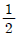
[(abc+(1))-(bc+b)]
(정답률: 71%)
16. 모수인자 A를 3수준, 변량인자 B를 4수준, 반복 3으로 하여 2원배치의 실험을 하였을 때 인자 A의 불편분산 기대치는?
- σ2E+3σ2A×B+8σ2A
- σ2E+6σ2A×B+8σ2A
- σ2E+3σ2A×B+12σ2A
- σ2E+6σ2A×B+ 12σ2A
(정답률: 72%)
17. 아래의 표는 반복이 2회인 22 요인실험이다. 인자 A와 B의 교호작용의 효과는?
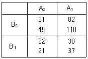
- -23
- -12
- 10
- 28
(정답률: 67%)
18. 회귀 모형에서 오차항에 대한 가정으로 틀린 것은?
- 랜덤성
- 불편성
- 정규성
- 등분산성
(정답률: 63%)
19. 변수 X와 Y의 값이 다음과 같을 때 상관계수는?
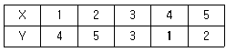
- -0.8
- -0.4
- 0.2
- 0.5
(정답률: 65%)
20. L8(27)인 직교배열표에서 7 이 의미하는 것은?
- 실험의 회수
- 배치 가능한 요인의 수
- 요인의 수준수
- 직교배열표의 행의 수
(정답률: 64%)
2과목: 통계적품질관리
21. N(50,4)의 분표를 하고 있는 모집단으로부터 취한 n=5의 랜덤샘플에 대해 통계량 S(x,x)=
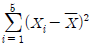
을 구하면 S(x,x)의 기대치는?- 3.2
- 4
- 12.8
- 16
(정답률: 42%)
22. 다음 중 u관리도의 관리한계선(UCL, LCL)의 표현으로 옳은 것은?
- u ± 3
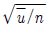
- u ±
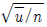
- u ± 3
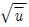
- u ±
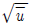
(정답률: 66%)
23. 확률분포에 대한 설명으로 틀린 것은?
- 포아송분포의 평균과 분산은 같다.
- 이항분포의 평균은 np이고 표준편차는
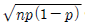
이다. - 초기하분포에서
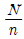
≥ 10이면 이항분포로 근사시킬 수 있다. - 평균이 μ이고, 표준편차가 σ인 정규모집단에서 샘플링한 데이터의 평균의 분포는 평균이 μ이고, 표준편차가
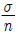
이다.
(정답률: 59%)
24. 전기 마이크로미터의 정확도를 비교하기 위하여 A, B 2개의 전기 마이크로미터로 크랭크샤프트 5개에 대해 각각 외경을 측정하여 다음의 결과를 얻었다. A, B간의 차이를 검정하기 위한 검정 통계랑은 약 얼마인가?
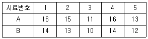
- 1.31
- 3.21
- 3.42
- 6.53
(정답률: 38%)
25. 계수값 샘플링 검사에서 일반적으로 로트의 크기와 샘플의 크기를 일정하게 하고, 합격판정개수를 증가시킬 때 생산자 위험과 소비자 위험에 관한 설명으로 옳은 것은?
- 생산자 위험은 감소하고, 소비자 위험은 증가한다.
- 생산자 위험은 증가하고, 소비자 위험은 감소한다.
- 생산자 위험과 소비자 위험 모두 증가한다.
- 생산자 위험과 소비자 위험 모두 감소한다.
(정답률: 66%)
26. 계수치 샘플링검사 절차 - 제1부 : 로트별 합격품질한 계(AQL) 지표형 샘플링검사 방안 (KS Q ISO 2859-1)에 따라 샘플링 검사를 행할 때, 까다로운 검사에서 보통검사로 전환되는 경우는?
- 전환스코어의 현상값이 30 이상이 된 경우
- 연속 5로트가 초기 검사에서 합격이 된 경우
- 생산 진도가 안정되었다고 소관 권한자가 인정한 경우
- 연속 5로트 이내의 초기 검사에서 2로트가 불합격된 경우
(정답률: 61%)
27. 만성적으로 존재하는 것이 아니고 산발적으로 발생하여 품질변동을 일으키는 원인으로 현재의 기술수준으로 통제가능한 원인을 뜻하는 용어는?
- 불가피원인
- 우연원인
- 억제할 수 없는 원인
- 이상원인
(정답률: 69%)
28. n=5인
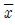
- R 관리도에서 UCL=43.4, LCL=16.6 이었다. 공정의 분포가 N(30,102)일 때 관리도가 관리한계선 밖으로 벗어날 확률은 약 얼마인가?
관리도가 관리한계선 밖으로 벗어날 확률은 약 얼마인가?- 0.027
- 0.013
- 0.0027
- 0.0013
(정답률: 53%)
29. 두 변수 X, Y간의 관계를 조사하기 위해 다음의 데이터를 얻었다. 이 데이터로부터 단순회귀직선을 추정할 때 회귀 계수 값을 구하면 약 얼마인가?
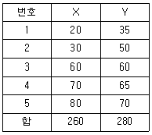
- 0.319
- 0.519
- 0.921
- 0.968
(정답률: 51%)
30. 두 집단으로부터 추출된 다음의 자료를 이용하여 표본 상관계수를 구하면 약 얼마인가?
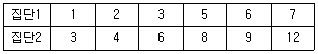
- 0.858
- 0.958
- 0.985
- 0.909
(정답률: 54%)
31. 1상자 당 각각 1000개의 볼트가 포장된 상자 80개가 있다. 이중에서 4상자를 샘플링하고 각 상자로부터 50개씩 볼트를 샘플링하여 조사하였더니 부적합품이 각각 4개, 2개, 8개, 6개가 발견되었다. 볼트의 부적합품수는 총 몇 개로 추정되는가?
- 1000개
- 3200개
- 4000개
- 8000개
(정답률: 52%)
32. 4×2 분할표에서 독립성을 검정하고자 할 때 X2분포의 자유도는?
- 2
- 3
- 4
- 6
(정답률: 67%)
33. A, B 두 회사에서 제조되는 자전거 표면의 흠의 수를 조사하였더니 A 회사는 자전거 1대당 10군데, B 회사는 자전거 1대당 25군데가 검출되었다. 유의수준 1%로 B회사에서 제조되는 자전거 1대당 표면의 흠의 수가 A 회사보다 더 많은지에 대한 검정 결과로 옳은 것은? (단, u0.995=2.576, u0.99=2.326이다.)
- A 회사 제품의 흠의 수가 더 많다.
- B 회사 제품의 흠의 수가 더 많다.
- 두 회사 제품의 흠의 수는 같다.
- 알 수 없다.
(정답률: 63%)
34. 정규 모집단으로부터 n=15의 랜덤샘플을 취하여
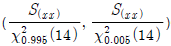
에 의거, 신뢰구간 (0.0691, 0.531)을 얻었다면, 다음 내용 중 가장 올바른 것은? (단, S(XX)는 X의 제곱의 합)- 모집단의 99%가 이 구간 안에 포함된다.
- 모평균이 이 구간 안에 포함될 신뢰율이 99% 이다.
- 모분산이 이 구간 안에 포함될 신뢰율이 99% 이다.
- 모표준편차가 이 구간 안에 포함될 신뢰율이 99% 이다.
(정답률: 65%)
35. 그림과 같은 표본 정규분포에서 제2종 과오를 나타내는 영역은? ( 단, 한쪽 검정인 경우로 가정한다.)
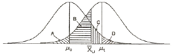
- A
- D
- A+B
- C+D
(정답률: 61%)
36. 계수치 축차 샘플링 검사방식(KS Q ISO 8422 : 2009)에서 PA(PRQ)에 관한 설명으로 가장 적절한 것은?
- 될 수 있으면 합격으로 하고 싶은 로트의 부적합품률의 상한
- 될 수 있으면 합격으로 하고 싶은 로트의 부적합품률의 하한
- 될 수 있으면 불합격으로 하고 싶은 로트의 부적합품률의 상한
- 될 수 있으면 불합격으로 하고 싶은 로트의 부적합품률의 하한
(정답률: 48%)
37. 샘플링(sampling) 검사와 전수검사를 비교하여 설명한 내용으로 틀린 것은?
- 품질향상에 대하여 생산자에게 자극을 주려면 개개의 물품을 전수검사하는 편이 좋다.
- 검사가 손쉽고 검사비용에 비해 얻어지는 효과가 클 때는 전수검사가 필요하다.
- 파괴검사에서는 물품을 보증하는데 sampling검사 이외는 생각할 수 없다.
- 검사비용을 적게 하고 싶을 때는 sampling검사가 일반적으로 유리하다.
(정답률: 53%)
38. 관리도에 대한 설명 중 틀린 것은?
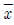
관리도와 이동평균 관리도(Me관리도)는 함께 사용하면 안된다.- 이동평균 관리도에서 W가 클수록 민감도는 증가한다.
- 이동평균 관리도로 산포의 변화를 체크하기는 어렵다.
- 이동평균 관리도에서는 V-mask 작성을 하지 않는다.
(정답률: 49%)
39. 로트의 부적합품률을 보증하기 위한 계랑 규준형 샘플링 검사에서 Lot의 부적합품률 p=5.5% 일 때 Kp=1.6이다. 하한규격 SL=40kg/cm2 이고, 이 Lot의 분포는 정규분포로서 σ=4kg/cm2 이다. 이 때, Lot의 평균치 m은 얼마인가?
- 31.4 kg/cm2
- 46.4 kg/cm2
- 49.1 kg/cm2
- 51.2 kg/cm2
(정답률: 54%)
40. 어떤 공정에 대해서  -R관리도를 작성하고 있다.
-R관리도를 작성하고 있다.
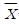
관리도에 점을 타점한 것 중 관리한계선 밖으로 벗어났을 때, 어떻게 판정하는 것이 가장 옳은가?- 부적합품이 나오고 있으니 빨리 조사해야 한다.
- 한 점은 벗어날 수 있으니 다음에 벗어날 때 까지 생산을 계속한다.
- 부적합품이 나오는지는 모르겠으나 공정에 어떤 이상 상태가 발생하였을 가능성이 있다.
- 관리한계선을 크게 벗어나지 않으면 이상이 없다.
(정답률: 63%)
3과목: 생산시스템
41. 1990년대 들어 컴퓨터 기술의 발전과 더불어 기업 전체의 경영자원을 유효하게 활용한다는 관점에서 기업 자원계획 또는 전사적 자원계획이라 하며, 협의의 의미로 통합형 업무패키지 소프트웨어라 하는 것은?
- DRP
- MRP
- ERP
- MRP II
(정답률: 74%)
42. 개선의 4 원칙이 아닌 것은?
- Common
- Simplify
- Eliminate
- Rearrange
(정답률: 60%)
43. 고정주문량모형과 고정주문주기모형의 비교 중 틀린것은?
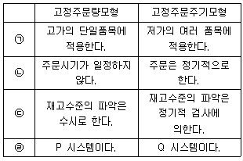
- ㉠
- ㉡
- ㉢
- ㉣
(정답률: 61%)
44. 자재 명세서(BOM)에 관한 설명 중 틀린 것은?
- 완제품 1단위에 필요한 원자재, 부품, 중간조립품의 종류와 수량을 명시한 일람표이다.
- 완제품 1단위가 생산되기 위해 종속수요재고가 결합하는 것을 보여주는 구조도이다.
- 한 제품이 완성되는 과정인 생산의 계층적인 단계를 보여준다.
- 각 개별 완제품의 주별 혹은 월별 생산계획이다.
(정답률: 52%)
45. 설비 선정 시 주문생산에서와 같이 제품별 생산량이 적고 제품설계의 변동이 심할 경우 어떤 기계설비의 설치가 유리한가?
- SLP
- 범용기계
- MAPI
- 전용기계
(정답률: 76%)
46. 10월의 수요예측값이 500개이고, 실제판매량이 540개일 때, 11월의 수요예측값은? (단, 지수평활계수 α=0.2 로 한다.)
- 484개
- 496개
- 508개
- 520개
(정답률: 67%)
47. 표에서 주어진 4개의 주문작업을 1대의 기계에서 처리하고자 한다. 최대 납기지연을 최소화하기 위한 주문작업의 가공순서는?
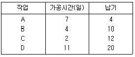
- A - B - C - D
- C - B - A - D
- D - C - B - A
- D - A - B - C
(정답률: 63%)
48. 개당 정미시간(Normal Time)이 2.0분, 외경법을 적용한 여유율이 15%인 품목의 1일(480분) 표준생산량은 약 몇 개인가?
- 168개
- 208개
- 248개
- 288개
(정답률: 64%)
49. 처음부터 보전이 불필요한 설비를 설계하는 것으로 보전을 근본적으로 방지하는 방식으로 신뢰성과 보전성을 동시에 높일 수 있는 보전방식은?
- CM (개량보전)
- PM (예방보전)
- MP (보전예방)
- BM (사후보전)
(정답률: 57%)
50. 동작경제의 원칙에 대한 설명으로 틀린 것은?
- 재료와 공구는 정위치에 두어야 한다.
- 가능하면 낙하식 운반방법을 이용한다.
- 재료와 공구는 작업동작이 원활하게 수행되도록 위치를 정해준다.
- 공구 및 재료는 안전사고 방지를 위해 작업장으로부터 멀리 배치한다.
(정답률: 71%)
51. 설비의 종합효율을 계산하는 식은?
- 시간가동률 × 속도가동률 × 양품률
- 시간가동률 × 실질가동률 × 양품률
- 시간가동률 × 성능가동률 × 양품률
- 시간가동률 × 속도가동률 × 실질가동률
(정답률: 66%)
52. PERT 기법에서 한 공정의 낙관적 시간이 4시간, 비관적 시간이 8시간, 정상적 시간이 6시간일 때, 기대시간(expected time)은?
- 5
- 6
- 7
- 8
(정답률: 71%)
53. 기업의 생산조직에서 작업을 전문화하기 위하여 테일러가 제시간 조직형태는?
- 라인 조직
- 기능식 조직
- 스텝 조직
- 사업부 조직
(정답률: 63%)
54. 도요타 생산방식의 특징에 관한 설명으로 틀린 것은?
- 자재흐름은 밀어내기 방식이다.
- 공정의 낭비를 철저히 제거한다.
- 소요량을 산정하여 필요량만 생산한다.
- 재고가 없고 조달기간은 짧게 유지한다.
(정답률: 78%)
55. 워크샘플링의 관측요령을 가장 적절하게 표현한 것은?
- 직접 및 연속 관측
- 간접 및 연속 관측
- 랜덤한 시점에서 순간 관측
- 정기적인 시점에서 순간 관측
(정답률: 64%)
56. 1인의 작업자가 2대 이상의 기계를 운전하는 경우의 사이클타임 분석에 사용하는 것은?
- Gang Process Chart
- Man-Multi Machine Chart
- Multi Man-Machine Chart
- Multi Man-Multi Machine Chart
(정답률: 75%)
57. 품절은 다음 중 어느 경우에 발생하는가?
- 조달 기간이 예정보다 길어질 때
- 발주점 이전의 수요량이 예상보다 적을 때
- 발주점 이후의 수요량이 예상보다 적을 때
- 발주 품목이 예상보다 일찍 입하 되었을 때
(정답률: 68%)
58. 운반 개선에는 이동 전, 후의 물품의 취급에 대한 분석을 하게 되는데, 취급하기 쉬운 정도를 나타내는 지수는?
- 수송지수
- 취급지수
- 관성지수
- 활성지수
(정답률: 49%)
59. 집중구매의 장점으로 틀린 것은?
- 구매수속을 신속히 처리할 수 있다.
- 공통자재를 일괄 구매하므로 재고를 줄일 수 있다.
- 대량구매로 가격과 거래조건을 유리하게 할 수 있다.
- 시장조사, 거래처조사, 구매효과의 측정 등을 효과적으로 할 수 있다.
(정답률: 51%)
60. 설비의 압력이나 온도 등의 제어요소가 어떤 운전한계를 초과한 경우, 자동제어체계에 의해서 설비가 일시정지된 상태의 손실을 의미하는 것은?
- 초기수율손실
- 속도저하손실
- 고장정지손실
- 잠깐정지, 공회전 손실
(정답률: 56%)
4과목: 신뢰성관리
61. 직렬시스템의 신뢰도에 대한 설명으로 틀린 것은?
- 최소경로집합(MPS)의 개수는 항상 1개이다.
- 시스템 신뢰도는 구성 부품의 신뢰도 보다 클 수 없다.
- 시스템 신뢰도는 구성 부품 신뢰도의 곱으로 표현된다.
- 최소절단집합(MCS)의 개수는 구성 부품의 개수 보다 작다.
(정답률: 42%)
62. 타이어 6개가 장착된 자동차는 6개의 타이어 중 5개만 작동되면 운행이 가능하다. 이 때 각 타이어의 신뢰도가 0.95로 동일하면, 자동차의 신뢰도는?
- 0.773
- 0.890
- 0.952
- 0.967
(정답률: 53%)
63. 신뢰도 관련 함수들 중 틀린 것은?
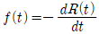
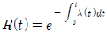
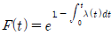
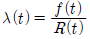
(정답률: 55%)
64. 생산단계에서 초기고장을 제거하기 위하여 실시하는 시험은?
- 내구성 시험
- 스크리닝 시험
- 신뢰성 성장 시험
- 신뢰성 결정 시험
(정답률: 71%)
65. 신뢰성과 안정성을 예측하기 위한 방법은?
- FMEA, FTA
- FTA, 디레이팅
- FMEA, 리던던시
- 디레이팅, 리던던시
(정답률: 65%)
66. 신뢰성을 증가시키기 위한 신뢰성 설계방법으로 틀린것은?
- 구성품에 걸리는 부하의 정격값에 여유를 두고 설계한다.
- 구성품의 고장이 가급적 전체고장을 일으키지 않게 한다.
- 잘못된 조작을 하면 즉시 전체의 고장이 발생하도록 설계한다.
- 요구되는 기능을 가급적 적은 수의 부품으로 실현되도록 한다.
(정답률: 68%)
67. 평균고장률과 평균수리율이 각각 λ와 μ인 지수분포의 경우 가용도는?
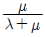
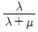
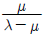
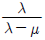
(정답률: 65%)
68. 다음 FTA에서 정상사상의 고장확률은? (단, FA=0.02, FB=0.⑤, FC=0.03 이다.)
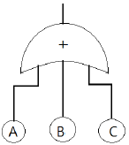
- 0.0003
- 0.0970
- 0.9030
- 0.9931
(정답률: 58%)
69. 고장률 곡선의 설명으로 옳은 것은?
- 고장률 감소기간(DFR) = 마모고장기간
- 고장률 일정기간(CFR) = 우발고장기간
- 고장률 증가기간(IFR) = 초기고장기간
- 고장률 증가기간(IFR) = 우발고장기간
(정답률: 68%)
70. 수명분포가 지수분포인 부품 n개를 t0시간에서 중단시험을 실시하였다. 그 동안 r개가 t1ㆍㆍㆍtr 시간에서 고장이 났을 때, 고장률을 표현한 식으로 옳은 것은? (단, 정시중단시험에서 고장품을 교체하지 않는 경우에 해당한다.
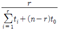
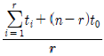
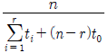
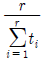
(정답률: 59%)
71. 신뢰성 샘플링 검사에서 고장률 척도의 설명으로 옳은 것은?
- λ0 = ARL, λ1 = LTFD
- λ0 = AQL, λ1= LTFD
- λ0 = ARL, λ1= LTFR
- λ0 = AQL, λ1= LTFR
(정답률: 51%)
72. A 제품의 파괴강도는 50 kg/cm2 이상이다. 파괴강도의 크기가 평균 40 kg/cm2 이고, 표준편차가 10 kg/cm2 의 정규분포를 따른다면 이 제품이 파괴될 확률은? (단, Z는 표준정규분포이다.)
- P(Z ＞ 1)
- P(Z ＞ 2)
- P(Z ≤ 1)
- P(Z ≤ 2)
(정답률: 57%)
73. 고장평점법에서 평점요소로 기능적 고장영향의 중요도(C1), 영향을 미치는 시스템의 범위(C2), 고장발생빈도(C3)를 평가하여 평가점을 C1=3, C2=9, C3=6 을 얻었다면 고장평점(CS)는?
- 4.45
- 5.45
- 8.72
- 12.72
(정답률: 61%)
74. 어떤 전자부품은 150℃ 가속수명시험에서 평균수명이 100시간으로 추정되었다. 이 부품의 활성화에너지가 0.25eV이고 가속계수가 2.0일 때, 정상사용조건의 온도는 약 몇 ℃ 인가? (단, 볼쯔만 상수는 8.617×10-5eV/K이며, 아레니우스 모델을 적용하였다.)
- 47
- 73
- 100
- 111
(정답률: 31%)
75. 고장이나 결함이 발생한 후에 수리에 의하여 보전하는 방법은?
- 개량보전
- 보전예방
- 사후보전
- 예방보전
(정답률: 71%)
76. 동일한 신뢰도를 갖는 2개의 부품으로 병렬 구성되어 있는 장비의 목표신뢰도가 0.95 가 되려면 각 부품의 신뢰도는?
- 0.⑤00
- 0.2236
- 0.7764
- 0.9500
(정답률: 59%)
77. 디버깅(debugging)을 충분히 실시하지 못할 경우 발생하기 쉬운 고장은?
- 돌발고장
- 열화고장
- 마모고장
- 초기고장
(정답률: 64%)
78. 5, 10.5, 18, 34, 47.6, 55, 67.2, 82, 100.5, 117.8 과 같은 완전데이터의 고장률 함수 λ(t=34)값은? (단, 중앙순위법(median rank)에 의해 계산한다.)
- 0.0110/시간
- 0.0149/시간
- 0.0222/시간
- 0.0235/시간
(정답률: 40%)
79. 300개의 전구에 대하여 수명시험을 실시할 경우, 1000시간까지의 고장개수가 80개일 때 불신뢰도 F(t)는?
- 0.13334
- 0.13456
- 0.21333
- 0.26667
(정답률: 62%)
80. MTBF가 1000시간인 제품의 고장률 함수가 일정고장시간(CFR) 이라면, 신뢰도 90%가 되는 사용시간은?
- 100
- 1⑤
- 110
- 115
(정답률: 54%)
5과목: 품질경영
81. 제품의 일반목적과 구조는 유사하나, 어떤 특정한 용도에 따라 식별할 필요가 있을 경우에 쓰는 표준화 용어는?
- 형식(type)
- 등급(grade)
- 종류(class)
- 시방(specification)
(정답률: 66%)
82. 요구품질로부터 품질방침을 설정하고 세일즈포인트를 명확히 정한다거나 적정한 대용특성으로 치환하여 품질설계를 하기 위한 가장 효과적인 방법은?
- 공정해석
- 설계심사
- 품질개선
- 품질전개
(정답률: 47%)
83. 측정기의 관리규정 항목으로 틀린 것은?
- 청소한 날짜
- 측정기의 보관, 출납
- 정기점검의 시기
- 측정기대장의 정리요령
(정답률: 49%)
84. 품질보증의 의미를 설명한 것 중 틀린 것은?
- 소비자의 요구품질이 갖추어져 있다는 것을 보증하기 위해 생산자가 행하는 체계적 활동
- 품질기능이 적절하게 행해지고 있다는 확신을 주기 위해 필요한 증거에 관계되는 활동
- 소비자의 요구에 맞는 품질의 제품과 서비스를 경제적으로 생산하고 통제하는 활동
- 제품 또는 서비스가 소정의 품질요구를 갖추고 있다는 신뢰감을 주기 위해 필요한 계획적, 체계적 활동
(정답률: 57%)
85. 관리활동을 효율적으로 수행하기 위한 PDCA의 4가지 스텝에 대한 설명으로 틀린 것은?
- P(Plan) : PDCA 사이클을 반복하면서 더 좋은 계획을 설정하도록 노력한다.
- D(Do) : 충분한 교육과 훈련을 실시하고 계획에 따라 수행한다.
- C(Check) : 실행결과를 계획과 비교한다.
- A(Action) : 수정조처는 책임과 권한에 관계없이 신속히 수행한다. 부적합항목 부적합품수(개) 1개당 손실금액(원)
(정답률: 67%)
86. 설계가 진행되는 적당한 시기에 설계된 도면에 대해 설계, 연구, 개발부문 등이 참가하여 실시하는 설계 심사는?
- 중간설계심사(intermediate D.R)
- 예비설계심사(preliminary D.R)
- 제품설계심사(product D.R)
- 최종설계심사(final D.R)
(정답률: 52%)
87. 6 시그마 단계 중 측정단계에서 수행하는 대표적인 기법은?
- 실험계획법
- 추정과 검정
- 공정능력분석
- 핵심인자 선정
(정답률: 52%)
88. 금속가공품의 제조공장에서 부적합품을 조사하여보니 다음 표와 같은 결과를 얻었다. 손실금액의 파레토 그림을 그릴 때 표면 부적합의 누적백분율은 약 몇 % 인가?
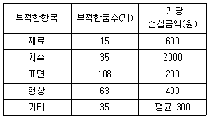
- 42.19
- 52.19
- 75.69
- 85.69
(정답률: 48%)
89. 정부로부터 품질을 보증 받는 효과를 지니며, 소비자 입장에서는 안심하고 제품을 살 수 있도록 하는 품질보증표시에 대한 국가별 표시가 틀린 것은?
- 미국 - US
- 영국 - BS
- 한국 - KS
- 일본 - JIS
(정답률: 62%)
90. 산업규격을 적용하는 지역과 범위에 따라 분류할 때 해당되지 않는 것은?
- 사내규격
- 잠정규격
- 단체규격
- 국가규격
(정답률: 59%)
91. 품질분임조활동의 기본이념으로 틀린 것은?
- 기업의 체질개선 및 발전에 기여한다.
- 인간성을 존중하여 보람 있는 밝은 직장을 만든다.
- 인간의 능력을 발휘하여 무한한 가능성을 끌어낸다.
- Top-Down 방식의 활동을 통해 기업의 주인의식을 확산 한다.
(정답률: 56%)
92. 품질경영시스템-요구사항(KS Q ISO 9001:2009)에서 품질경영시스템 문서화에 포함되는 일반사항으로 틀린 것은?
- 품질매뉴얼
- 구매관리 절차서
- 문서화하여 표명된 품질방침 및 품질목표
- 프로세스의 효과적인 기획, 운영 및 관리를 보장하기 위하여 조직이 필요로 하는 문서
(정답률: 61%)
93. 품질관리규정에서 품질관리위원회의 토의사항으로 가장 거리가 먼 것은?
- 작업표준의 개선 연구
- 연구개발에 관한 사항
- 불만처리사항 및 사내대책
- 품질관리 활동에 대한 감사
(정답률: 23%)
94. X-R(이동범위) 관리도를 작성하여 공정능력지수를 구하려고 한다. 공정능력지수(CP) 값은? (단, n=2, d2=1.128 이며 공정은 안정상태이고 정규분포를 따른다.)
- 0.953
- 1.152
- 1.213
- 1.397
(정답률: 37%)
95. 품질전략을 수립할 때 계획단계(전략의 형성단계)에서 SWOT 분석을 많이 활용하고 있다. 여기서 “T"는 무엇인가?
- 기회
- 위협
- 강점
- 약점
(정답률: 71%)
96. 6시그마의 본질로써 가장 거리가 먼 것은?
- 기업경영의 새로운 패러다임
- 프로세스 평가·개선을 위한 과학적 통계적 방법
- 검사를 강화하여 제품 품질수준을 6시그마에 맞춤
- 고객만족 품질문화를 조성하기 위한 기업경영 철학이자 기업전략
(정답률: 52%)
97. 품질코스트 중 예방코스트는?
- 검사측정비
- 폐각 손실액
- 설계 변경 코스트
- 품질관리에 관한 세미나 수강료
(정답률: 54%)
98. 제품책임(PL) 대책으로 결함제품을 만들지 않기 위한 예방활동은?
- PLD(Product Liability Defence)
- PLP(Product Liability Prevention)
- PLC(Product Liability Commercial Loss)
- PLS(Product Liability Safety)
(정답률: 62%)
99. 다음과 같은 규격의 3가지 부품 A, B, C를 이용하여 B+C-A와 같이 조립할 경우 이 조립품의 허용차는?
- ±0.⑤0
- ±0.060
- ±0.070
- ±0.110
(정답률: 62%)
100. 신QC 7가지 수법의 하나인 매트릭스도법(Matrix diagram)에 관한 설명으로 틀린 것은?
- 열과 행에 배치된 요소간의 관계를 나타낸다.
- 이원적인 관계 가운데서 문제 해결에 착상을 얻는다.
- 여러 요인 간에 존재하는 관계의 정도를 수량화하는데 이용된다.
- 일련의 요소를 행과 열에 나열하고, 그 교점에 상호관계의 유무나 관련을 파악하여 문제해결의 착안점을 얻는 방법이다.
(정답률: 52%)